Normalmente las propias marcas utilizan diferentes combinaciones de teclas para entrar a la Bios.
En la tabla siguiente puedes ver las combinaciones de teclas según la marca
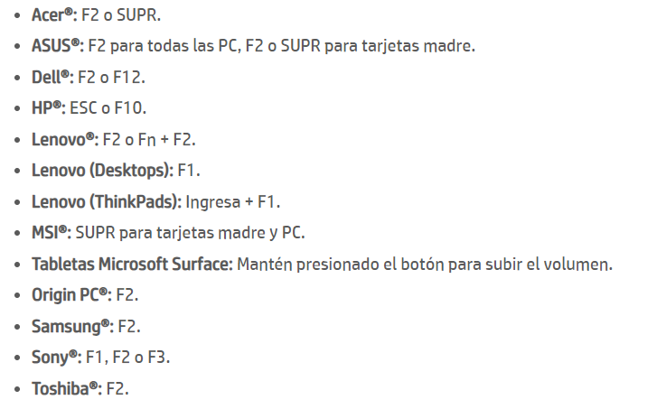
Pero los Hp de los que va esta guía utilizan las teclas de F10 o Esc
En la pantalla de arranque del pc, como la que se muestra abajo pulsa las teclas F10 o Esc para acceder a la BIOS y si se ejecuta correctamente deberá salir una línea de texto indicando que estas entrando a la Bios. 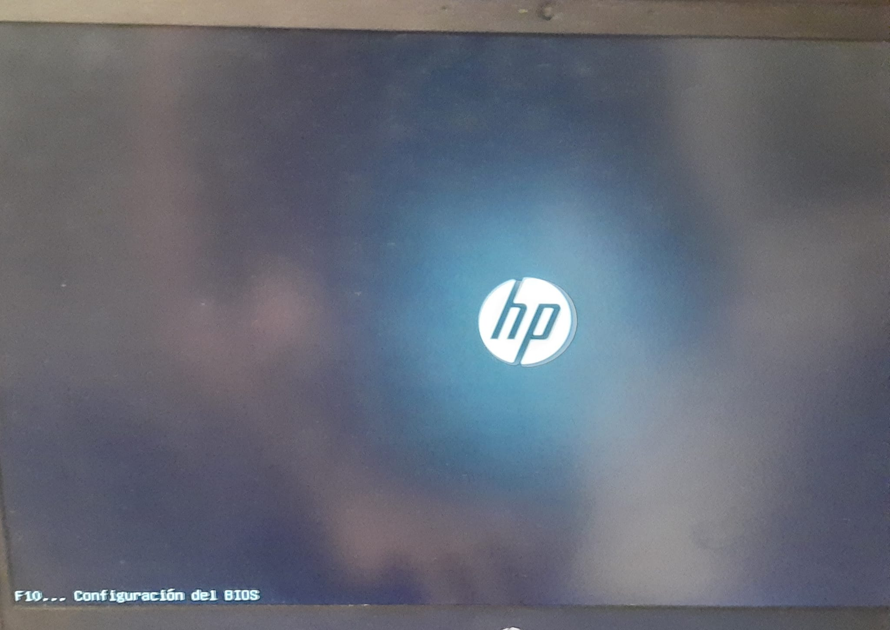 Después de entrar en ella debería entrar en el apartado principal de la Bios como la imagen, algunos modelos pueden ser un poco diferentes dependiendo de la edad del ordenador, pero los pasos a seguir son los mismos 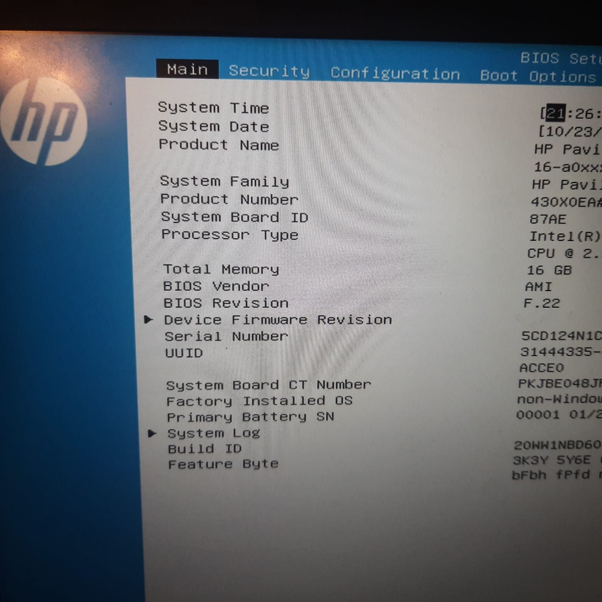
Es una contraseña que impide que un usuario no autorizado acceda a la BIOS o realice cambios en la configuración del BIOS.
Pero no es demasiado segura ya que en realidad existen llaves maestras para acceder a la administración de nuestras BIOS.
Es una contraseña que se solicitará para poder encender el equipo.
Esta opción no suele utilizarse en servidores, ya que si el equipo se reinicia, se le pedira esta contraseña cuando lo normal es encenderlo desde la red.
Primero nos moveremos al apartado de Security, en este menú configuraremos las contraseñas de administrador y de Power On 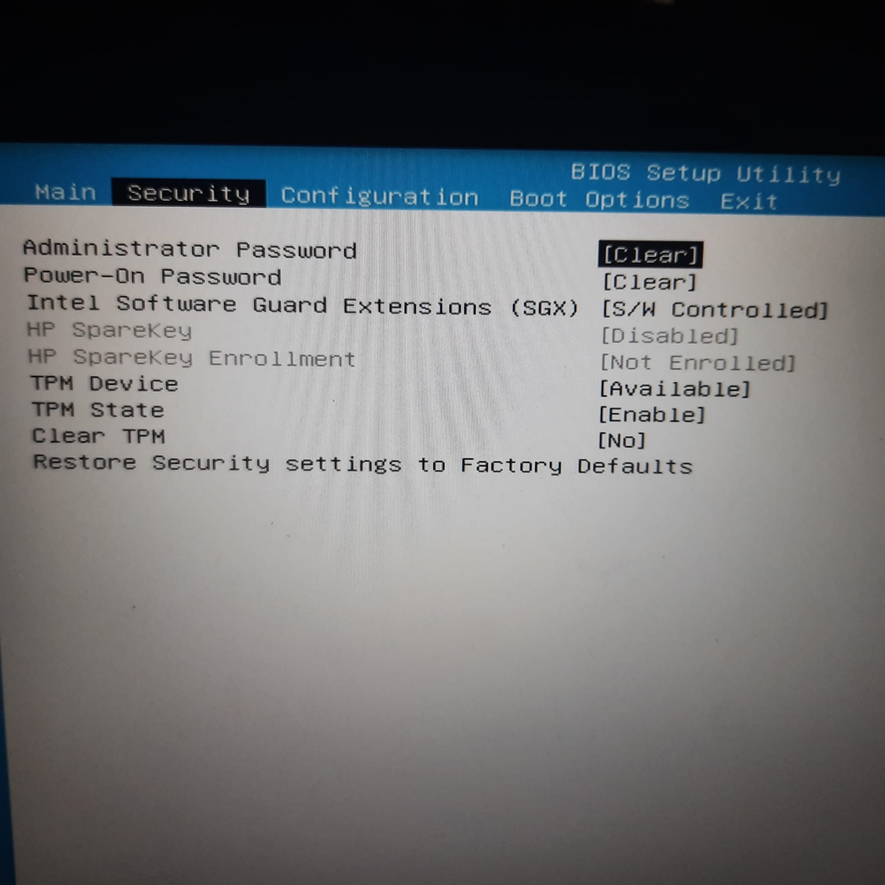 Utilizando las flechas nos situaremos en la opción de Administrator Password, esta opción debe estar en clear, significando que no hay contraseña establecida, al pulsar intro nos pedirá que escribamos una nueva contraseña.
Lo más recomendable es que esta contraseña tenga más de 8 caracteres y utilice caracteres alfanuméricos y si es posible también caracteres especiales. 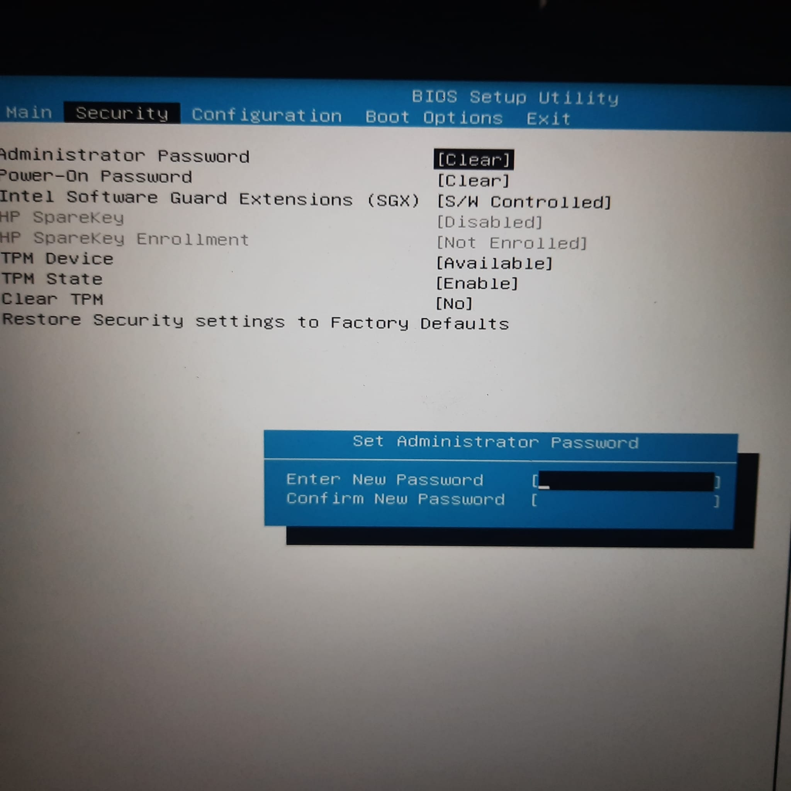 Para advertirnos de los caracteres no permitidos el ordenador hará pitar unos pitidos cada vez que intentemos escribir uno.
Al terminar de escribir la contraseña pulsaremos intro, y nos pide que repitamos la contraseña, una vez terminemos el clear se habrá puesto como set.
Para la contraseña Power On seguiremos el mismo procedimiento que con la contraseña de administrador, pero esta vez en la opción de Power On Password, al final del proceso las dos opciones deberán de estar en Set como la imagen de abajo. 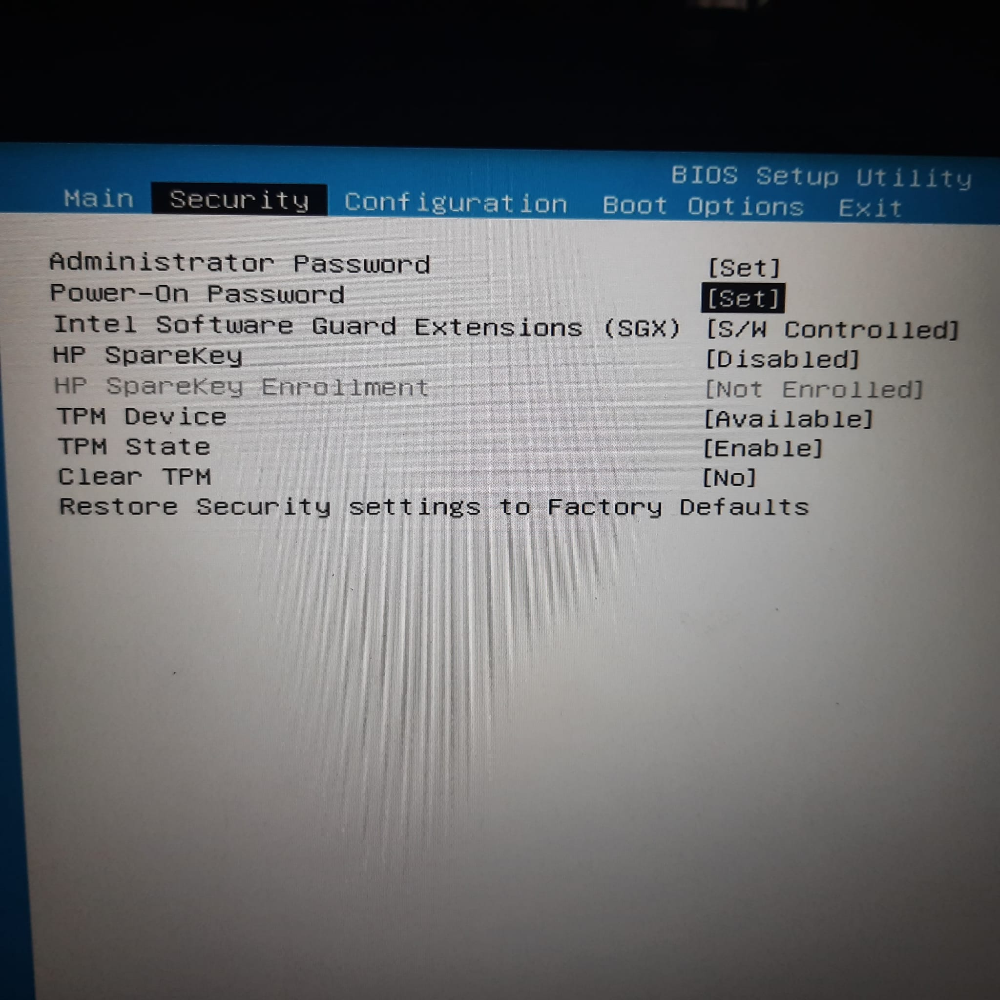
Primero nos moveremos al apartado de Boot Options, en este menú configuraremos los arranques externos
Nos moveremos a la opción de USB Boot, que es el que permite arrancar otro sistema operativo desde el puerto usb, si está en Disabled, significa que está desactivado y no hay que tocarlo. Si está en Enable pulsaremos la tecla intro y cambiaremos el modo a Disabled 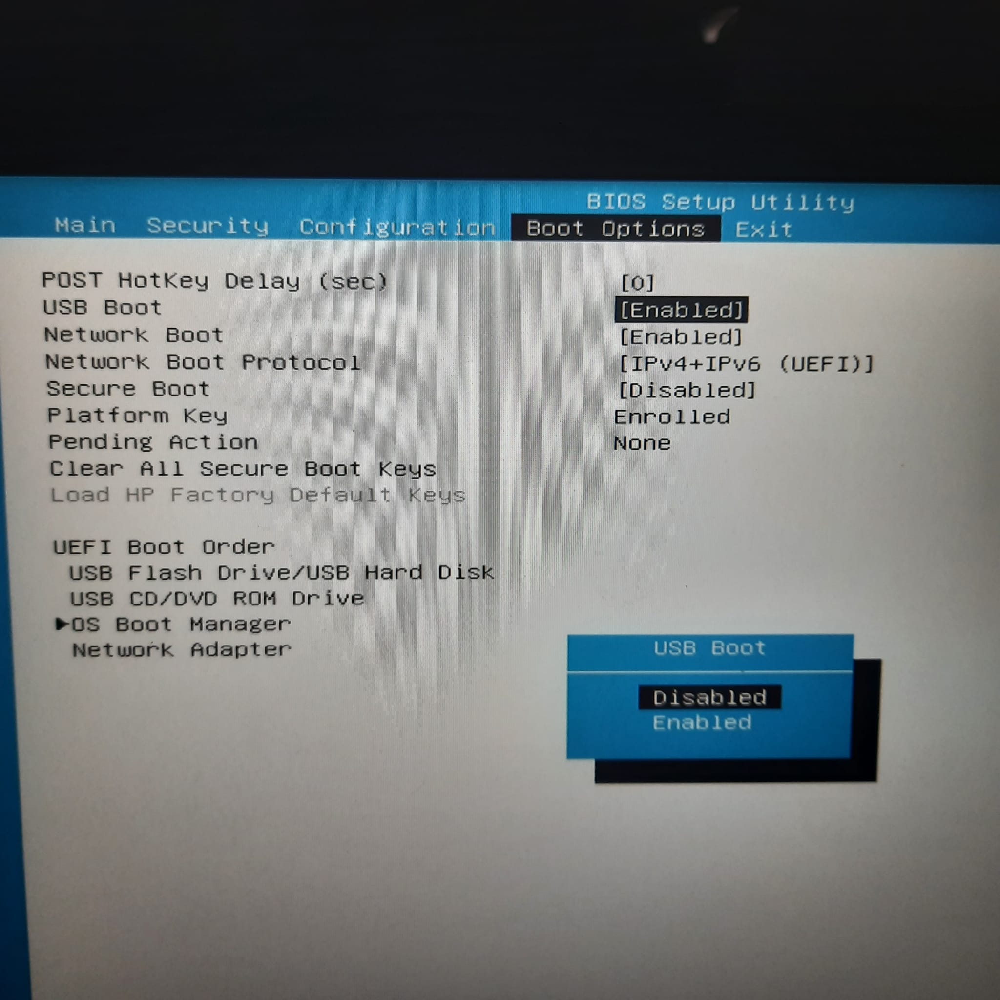
Después nos iremos a la opción de Secure Boot, es un opción introducida por Microsoft a partir de Windows 8 que deniega la ejecución en el arranque de software no firmado y, en principio, prohíbe la ejecución de cualquier cosa que no sea Windows.
Pero, algunas distribuciones Linux se han ido adaptando para que también se permita su ejecución.
Si tu sistema operativo es Linux, es aconsejable que esta opción este en modo Disabled, y si es Windows, se aconseja en modo Enable, ya que impide que software no reconocidos se ejecuten.
En la realidad, si tu sistema operativo es Ubuntu o Debian lo más seguro es que esta opción permite la ejecución del software. 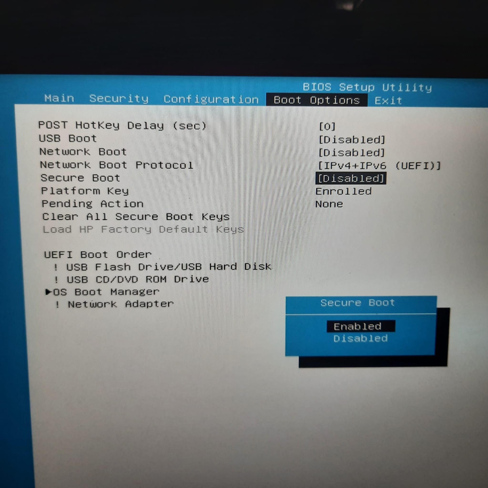
Nos moveremos a la opción de Network Boot, que es el que permite arrancar el sistema operativo desde la red, si el uso del ordenador es como servidor se aconseja que se deje en modo Enable.
Pero para uso doméstico o personal se aconseja dejarlo en modo Disabled, ya que con esta opción no permitiremos que alguien encienda el ordenador desde la red.
El orden de arranque es el orden por el que el ordenador intenta arrancar primero. 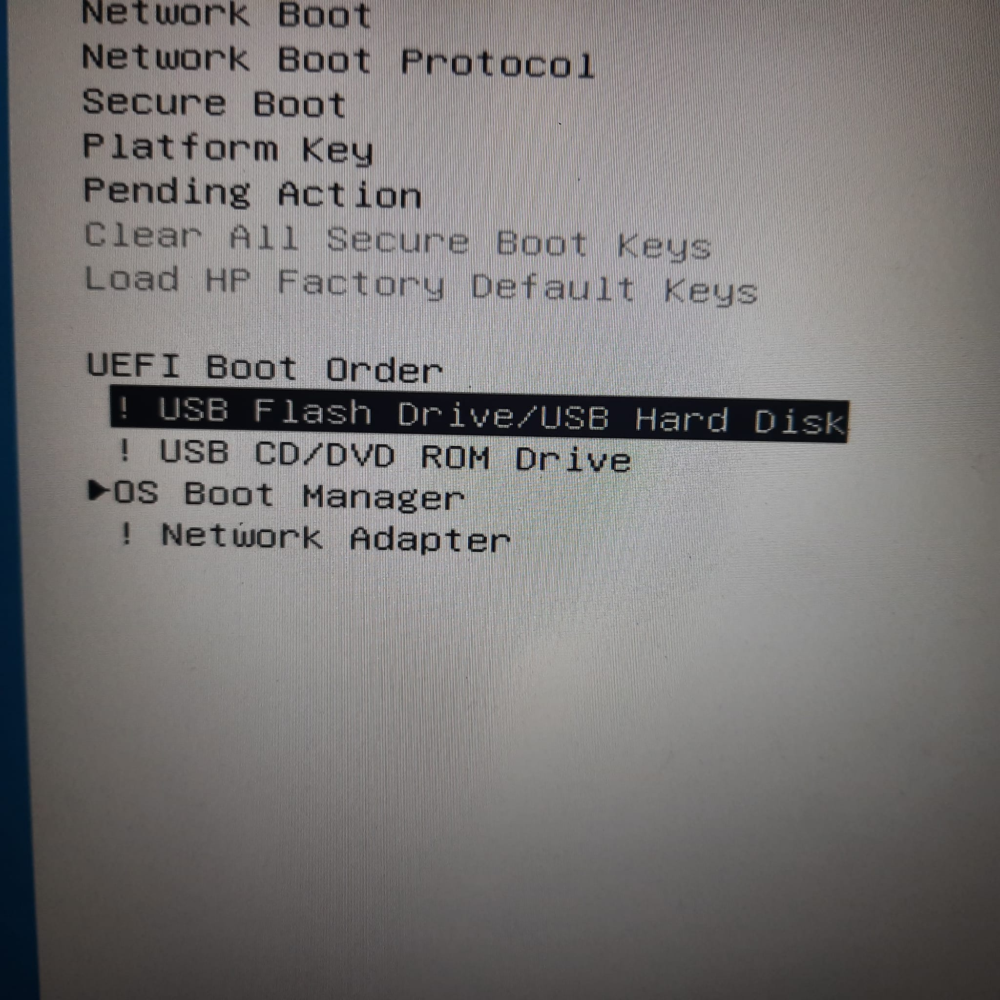 El modo para cambiarlo es seleccionarlo con las flechas y utilizar F5 y F6 para cambiar el orden, las opciones con un signo de interrogación, significa que esa opción de arranque está deshabilitada.
Ahora te explicaremos el significado de cada opción:
USB Flash Drive/USB Hard Disk: Esta opción significa que intentará arrancar desde un pendrive o un disco duro.
USB CD/DVD Rom Drive: Esta opción significa que intentará arrancar desde un DVD, CD o un disco óptico.
En los ordenadores actuales sin lector de cd esta opción siempre estará desactivada
OS Boot Manager: Esta opción significa que intentará arrancar desde el volumen de arranque del sistema operativo instalado.
Network Adapter: Esta opción significa que intentará arrancar desde la tarjeta red de nuestro ordenador.
La recomendación es poner la opción de OS Boot Manager como la primera, y tener el resto de las opciones deshabilitadas, y solo cambiar el orden o activar algunas de las otras opciones solamente cuando sea necesario 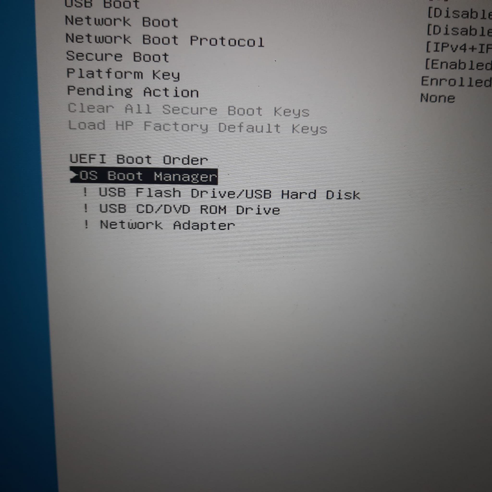 Este orden es solo un ejemplo de ello
Para terminar nos moveremos al apartado de Exit, a la opción de Save Changes and Exit para guardar los cambios realizados y salir de la BIOS, si este paso no se realiza, los cambios en la configuración de la BIOS no se guardarán. 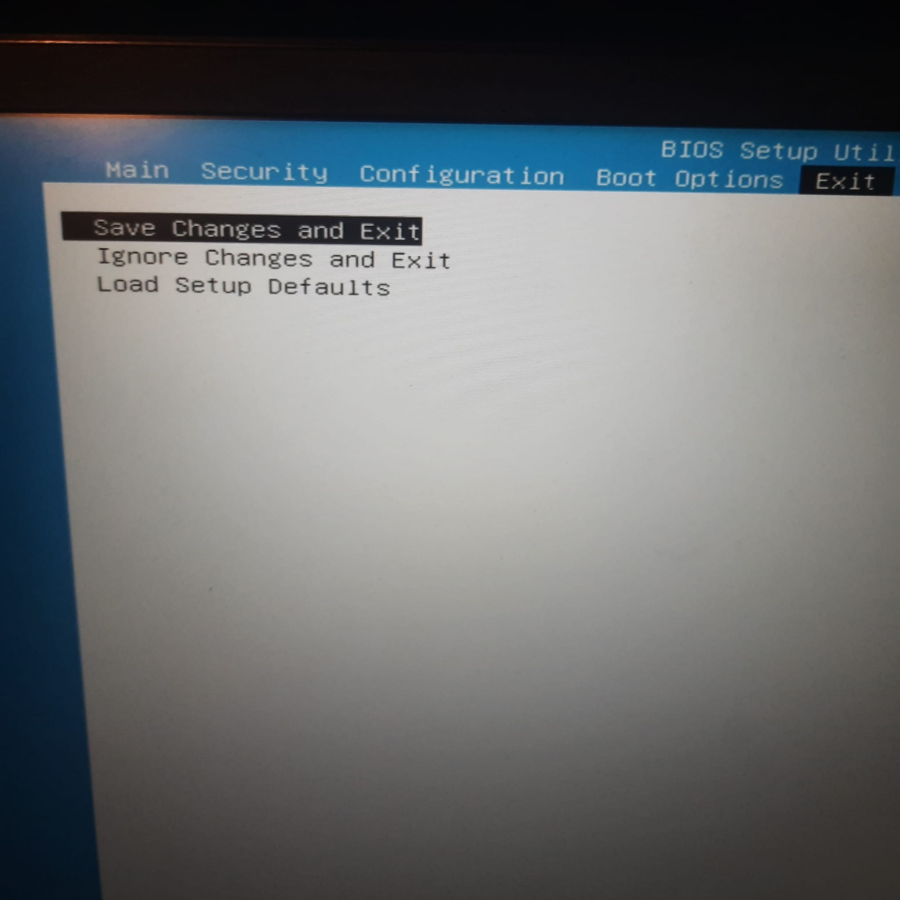